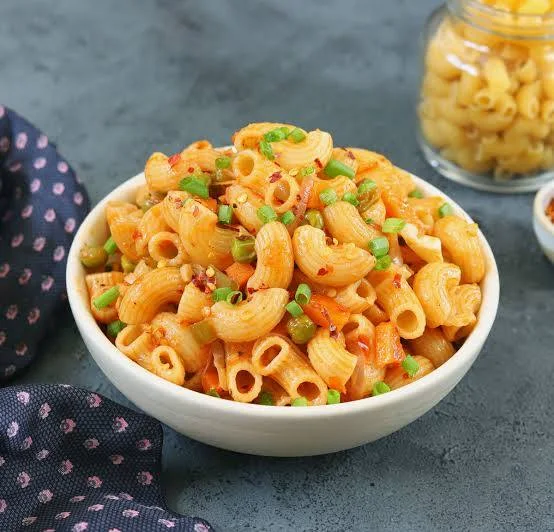

Home
Macaroni Recipe

Description
Macaroni is a comforting pasta dish made with tender macaroni, a creamy cheese sauce, and simple seasonings. It is quick to prepare and loved by both kids and adults.
This recipe makes a rich and creamy macaroni that is perfect as a main course or side dish.
Ingredients
- 250 g elbow macaroni
- 2 tbsp butter
- 2 tbsp all-purpose flour
- 2 cups milk
- 2 cups cheddar cheese, shredded
- Salt to taste
- Black pepper
- Paprika (optional)
Steps
- Cook the macaroni according to the package instructions.
- Melt the butter in a saucepan.
- Stir in the flur and cook for one minute.
- Gradually whisk in the milk.
- Cook until the sauce thickens.
- Add the shredded cheese and stir until melted
- Season with salt, pepper, and paprika.
- Mix the cooked macaroni into the cheese sauce.
- Serve immediately while hot